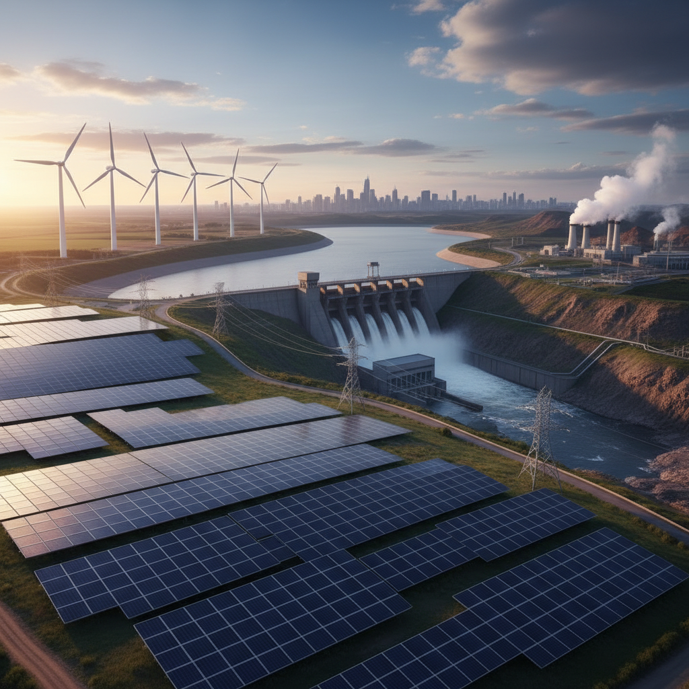
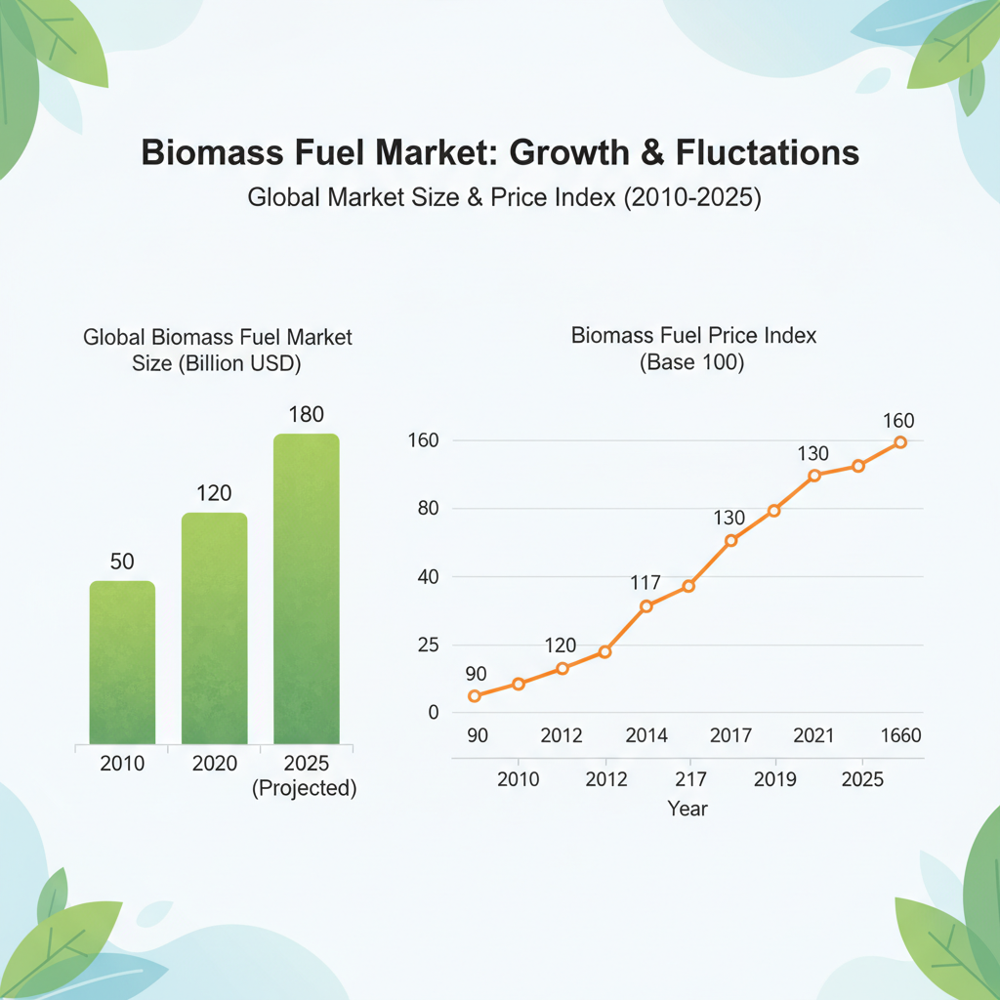
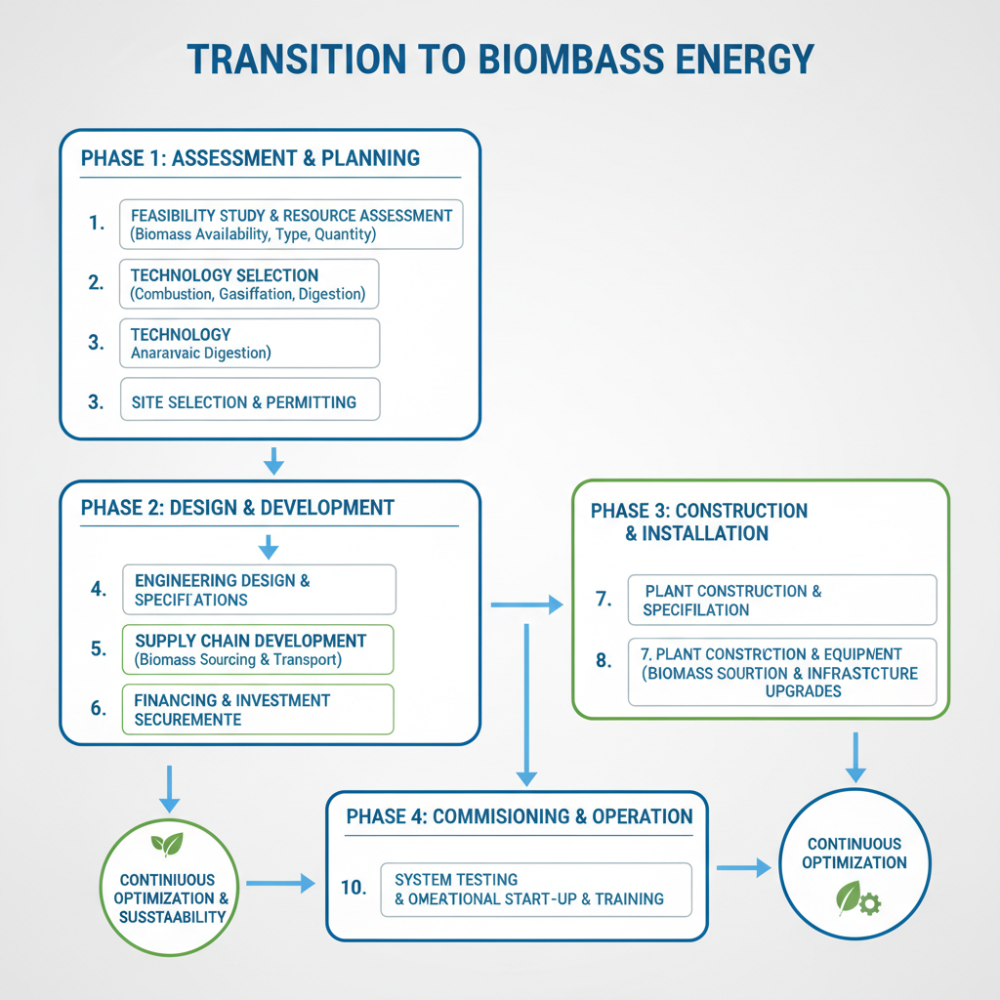

Renewable Energy Resources: Trends and Insights
Overview of Renewable Energy Sources

A visual representation of the various renewable energy sources.
As the world shifts towards a more sustainable future, renewable energy sources have emerged as a vital component in meeting global energy demands. There are five primary types of renewable energy sources: solar, wind, hydro, geothermal, and biomass.
- Solar Energy: Harnessing energy from the sun's rays, solar energy has become increasingly cost-competitive with fossil fuels. Its scalability is vast, making it an attractive option for both residential and commercial applications.
- Wind Energy: Wind turbines convert wind kinetic energy into electricity, providing a reliable source of power. While land acquisition can be a challenge, advancements in technology have improved efficiency and reduced costs.
- Hydro Energy: The flow of water is harnessed to generate electricity through hydroelectric power plants. This renewable source has a high capacity factor, making it an essential component of grid energy mixtures.
- Geothermal Energy: Heat from the Earth's core is used to produce electricity and provide heating/cooling solutions. Geothermal energy has a relatively low environmental impact compared to other sources.
- Biomass Energy: Organic matter such as wood, agricultural waste, and wastewater can be burned to produce heat or electricity. Biomass has both advantages (e.g., carbon neutrality) and challenges (e.g., land use requirements).
Emerging trends in renewable energy development include the increasing adoption of:
- Advanced technologies for solar panels and wind turbines
- Bioenergy with Carbon Capture and Storage (BECCS)
- Electric vehicles and charging infrastructure
- Green hydrogen production
These advancements will continue to drive growth in the renewable energy sector, enabling a more sustainable future for generations to come.
US to Overwhelmingly Build Clean Power in 2026
According to a recent report by the US Energy Information Administration, the United States is expected to overwhelmingly build clean power in 2026. The expected growth of solar, battery, and wind power is significant, with solar energy additions projected to increase by 50% YoY, followed by a 30% YoY growth in battery storage, and a 25% YoY growth in wind power.
The record year for power plant construction, as reported by CanaryMedia, highlights the growing demand for clean energy solutions. This trend is expected to continue, with the US Energy Information Administration predicting that renewable energy will account for over 60% of new power generation capacity added in 2026.
As biomass fuel market size and growth rate are expected to increase significantly, it's essential to consider the advantages of biomass as an alternative to fossil fuels. According to Ecostan, biomass offers several benefits, including lower greenhouse gas emissions and higher energy density compared to traditional fossil fuels.
Biomass Fuel Market Analysis

A graphical representation of the biomass fuel market trends.
The biomass fuel market has experienced significant growth in recent years, driven by increasing demand for renewable fuels and government initiatives to promote sustainable energy sources. The market is characterized by a diverse range of feedstock types, including agricultural waste, forestry residues, and wastewater treatment plant sludge.
Feedstock Types, Applications, and End-Users
The biomass fuel market encompasses various feedstocks, each with its unique characteristics and applications:
- Agricultural waste (e.g., corn cobs, sugarcane bagasse) is used for power generation, heat production, and transportation fuels.
- Forestry residues (e.g., sawmill waste, wood chips) are utilized for energy production, paper manufacturing, and other industrial processes.
- Wastewater treatment plant sludge is converted into biogas, a mixture of methane and carbon dioxide, which can be used as a renewable fuel.
Increasing Demand for Renewable Fuels
The global demand for renewable fuels is on the rise, driven by growing concerns about climate change, air pollution, and energy security. Governments worldwide have implemented policies to promote sustainable energy sources, including tax incentives, subsidies, and low-carbon standards.
According to Coherent Market Insights, the biomass fuel market size was valued at $15.4 billion in 2025 and is expected to grow at a compound annual growth rate (CAGR) of 7.3% from 2026 to 2033 (1).
The US has set ambitious targets for clean energy production, with the goal of building an overwhelming majority of its power from clean sources by 2026 (2). This shift towards renewable energy is expected to drive growth in the biomass fuel market.
As noted by Advanced Biofuels USA, the US biomass-based diesel market is poised for significant growth, with a tipping point predicted for 2026 (3).
The advantages of biomass fuels over fossil fuels are well-documented, including lower greenhouse gas emissions and reduced dependence on imported oil. As highlighted in a report by Ecostan, biomass fuels offer "a promising alternative to fossil fuels" with "significant future opportunities" (4).
In conclusion, the biomass fuel market is experiencing significant growth, driven by increasing demand for renewable fuels and government initiatives to promote sustainable energy sources. As the global energy landscape continues to evolve, it is essential to understand the current state of the biomass fuel market and its growth prospects.
References:
[1] Coherent Market Insights. (2026). Biomass Fuel Market Size & YoY Growth Rate, 2026-2033.
[2] Canary Media. (2026). US to overwhelmingly build clean power in 2026.
[3] Advanced Biofuels USA. (2026). US Biomass-Based Diesel 2026: A Tipping Point for Growth.
[4] Ecostan. (2026). Biomass vs Fossil Fuels: Advantages & Future Opportunities - https://www.ecostan.com/blog/biomass-as-an-alternative-to-fossil-fuels-advantages-and-future-opportunities.
Advantages of Biomass Energy
Biomass energy offers several advantages over traditional fossil fuels, making it an attractive alternative for power generation and industrial applications. Some key benefits include:
- Reduced Greenhouse Gas Emissions: Biomass energy production generates significantly lower greenhouse gas emissions compared to fossil fuels. According to a report by the US Department of Energy, biomass energy can reduce CO2 emissions by up to 90% compared to traditional fossil fuel-based power generation.
- Scalability and Local Availability: Biomass energy is available from local sources such as agricultural waste, forestry residues, and municipal solid waste, making it a highly scalable and accessible alternative. This reduces reliance on imported fuels and promotes energy security.
These advantages are supported by reputable publications, including:
- "Biomass vs Fossil Fuels: Advantages & Future Opportunities" by Ecostan, which highlights the potential of biomass as an alternative to fossil fuels.
- "US Biomass-Based Diesel 2026: A Tipping Point for Growth," which explores the growth prospects of biomass-based diesel in the US market.
As noted in the report "Biomass Fuel Market Size & YoY Growth Rate, 2026-2033" by Coherent Market Insights, the global biomass fuel market is expected to experience significant growth in the coming years.
Future of Industrial Fuel: Transitioning to Biomass Energy

A visual representation of the biomass energy transition process.
The transition from fossil fuels to biomass energy is gaining momentum as a cleaner and more sustainable alternative for industrial fuel. The benefits of this shift are substantial, including reduced greenhouse gas emissions which contribute significantly to climate change.
- Reduced Greenhouse Gas Emissions: Biomass energy produces significantly lower greenhouse gas emissions compared to traditional fossil fuels. According to the US Energy Information Administration, biomass energy can reduce CO2 emissions by up to 90% (Source: US to overwhelmingly build clean power in 2026).
- Increased Energy Security: Biomass energy is a domestic resource that reduces dependence on imported fossil fuels, enhancing energy security and reducing the impact of price volatility (Source: Biomass Fuel Market Size & YoY Growth Rate, 2026-2033).
- Job Creation and Economic Growth: The transition to biomass energy can create new job opportunities in the agricultural sector, forestry, and manufacturing, contributing to local economic growth (Source: US Biomass-Based Diesel 2026: A Tipping Point for Growth).
However, there are also challenges associated with this transition. These include:
- Land Use and Resource Competitiveness: Biomass production can compete with food crops and other land uses for resources, potentially affecting agricultural productivity (Source: Biomass vs Fossil Fuels: Advantages & Future Opportunities - Ecostan).
- Infrastructure and Technology: Widespread adoption of biomass energy requires significant investment in infrastructure, including storage facilities, transportation systems, and power generation technologies (Source: Biomass Energy vs Fossil Fuels: The Future of Industrial Fuel - FABON).
To overcome these challenges, it is essential to develop and implement policies that support the transition to biomass energy. This can include incentives for farmers and manufacturers, investments in research and development, and education and training programs for workers in the sector.